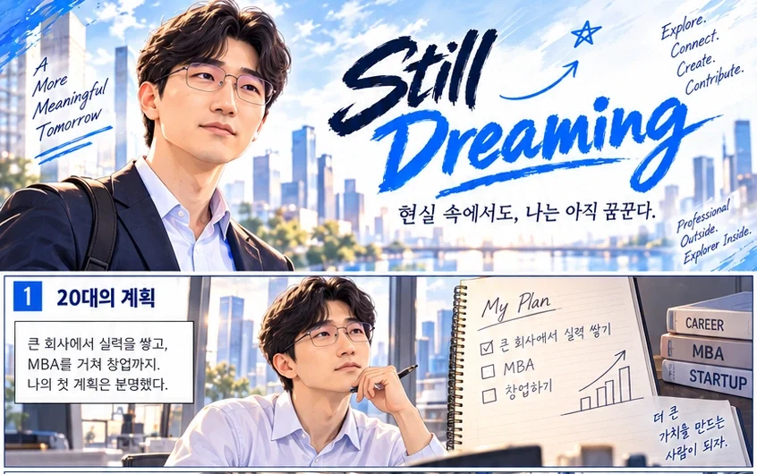

회사에서 더 깊이 이끌다
리더로 성장하며 더 넓은 리더십과 비즈니스·기술의 시야를 갖추고 싶습니다.
Professional Outside. Explorer Inside.
비즈니스와 사람, 기술을 연결하며, 결국 함께 더 좋은 내일을 만드는 일을 꿈꿉니다.
배지열 Profile 보기경력, 스토리, 미래 계획을 카드로 나누었습니다. 카드를 누르면 더 자세한 프로필이 펼쳐집니다.
한양대학교 기계공학에서 시작해 국내 사업개발, 미국 주재원 SCM, 신사업 전략, 시스템 개발과 KAIST MBA로 이어지는 경험을 쌓아왔습니다.
사업기획, 신상품, 협력사 관계, 시장·고객 인사이트
영업, 물류, 재고, 글로벌 공급망, 위기 대응
데이터, UX/UI, 시스템 구조, 변화관리의 비즈니스적 이해
Mechanical engineering · Graduation research and interdisciplinary competitions
(미군 카투사 포병대대 육군병장 만기 전역)
Studied how micro-porosity in aluminum alloys relates to material properties; also explored brand, marketing and distribution competitions during university.
Top award for graduation research presentation in 2009 and additional student competition recognition.
Built evidence-based problem-solving habits by structuring technical questions through hypotheses, data and validation.
Hyundai Mobis · Global accessories sales
Helped establish a new business model connecting manufacturers, distribution partners and automotive service networks.
Contributed to launching a partnership-led business initiative and received CEO recognition.
Learned to align different stakeholder incentives around a practical, shared value proposition.
Hyundai Mobis · Global accessories sales
Translated customer and field research into new product ideas and distribution-channel development.
Helped establish a private-label product and channel model that contributed to business growth.
Developed a market-led approach linking front-line insights with product, channel and differentiation strategy.
Hyundai Mobis U.S. organization · Sales / product planning
Supported market-specific product planning and local commercial operations for U.S. customers.
Participated in localized product programs across multiple vehicle models.
Learned to turn local customer requirements into deliverable products while coordinating across global partners.
Hyundai Mobis U.S. organization · Inventory / logistics / SCM
Worked through production disruptions, shipping constraints and supply bottlenecks during the pandemic.
Collaborated with supply partners and local teams to sustain operations under uncertainty.
Developed a systems perspective on operational risk across sales, production, inventory and logistics.
Hyundai Mobis · Service new business strategy
Developed product ideas and roadmaps while improving repeatable project-management processes.
Helped formalize project practices and encouraged ownership within a small cross-functional team.
Learned how structure, operating rhythm and leadership help convert creativity into repeatable execution.
Hyundai Mobis · Process innovation / system development
Working across operational data, processes, SQL, UX/UI, system requirements and change management.
Contributing to a next-generation logistics platform; its 2027 release remains a target, not a completed milestone.
Building the capability to translate business problems into technical requirements and lead across business and IT.
KAIST College of Business · MBA student
Studying strategy, finance, organization design, SCM, analytics and technology-enabled change.
Received a High Honor academic distinction from the graduate business school.
Strengthening analytical decision-making by connecting engineering, professional experience and management concepts.
현대모비스 사내활동팀(따뜻한빵) 리더
Organizing employee participation in bread-making and donation activities.
Working with a renewed organizing team to build a more sustainable volunteer model.
Learned that sustainable contribution depends on relationships and practical operating systems, not good intentions alone.
회사 보안과 개인정보를 고려하여 공개 가능한 범위의 경험만 기술했습니다. 예정된 성과는 계획으로 구분합니다.
새로운 것을 발견하고, 직접 경험하고, 좋은 사람들과 생각을 나누는 일을 좋아합니다. 직장 밖의 관심사도 결국 사람과 세상을 더 이해하는 방식입니다.
관심 있는 카드를 눌러 살펴보세요.
미국 주재원 시절, 캘리포니아 얼바인에서 러시모어산까지 자동차로 여행했습니다. 가장 오래 기억에 남은 것은 목적지보다 길에서 만난 끝없는 풍경과 광활한 자연이었습니다.
새로운 것을 배우고, 서로 다른 관점을 이해하며, 함께 만들고 나누는 삶을 지향합니다.
회사에서 제빵 기부 봉사 동아리를 운영하고 있습니다. 사람들이 자발적으로 참여하며 나눔을 지속할 수 있는 관계와 운영 방식을 고민합니다.

Not every turn was planned. Every chapter shaped who I am.
20대의 계획부터 사업개발, 미국에서의 경험, 배움과 봉사, 그리고 계속되는 꿈까지. 실제 경험을 바탕으로 그린 커리어 웹툰입니다.
실제 경험을 바탕으로 일부 장면은 시각적으로 각색되었습니다.회사에서 리더십을 더 갖추고, 마음이 맞는 사람들과 네트워킹하며, 예비 창업을 준비하고 싶습니다. 언젠가는 나만의 피자 브랜드를 만들고, 직접 만든 피자를 나누며 더 많은 사람들과 함께 행복해하는 미래를 그리고 있습니다.
리더로 성장하며 더 넓은 리더십과 비즈니스·기술의 시야를 갖추고 싶습니다.
가치관이 비슷하고 서로의 부족함을 보완해 줄 수 있는 사람들과 오래 함께하고 싶습니다.
재직 중에도 작은 실험과 준비를 이어가며, 언젠가 사회에 의미를 더하는 사업을 만들고 싶습니다.
나만의 브랜드를 만들고 재능 기부를 하면서 사회에 기여하고 싶습니다.

리더십, 네트워킹, 창업 준비, 피자 브랜드, 재능 기부, 함께하는 행복까지. 아직 완성되지 않은 미래를 여섯 장면에 담았습니다.
앞으로 이루고 싶은 비전을 상상해 그린 웹툰입니다.좋은 사람들과 좋은 일을 만들고, 그 결과를 다시 주변에 나누는 일. 그것이 지금 제가 꿈꾸는 미래입니다.
같은 가치관, 서로 다른 강점, 그리고 오래 이어질 수 있는 긍정적인 관계. 좋은 사람들과 의미 있는 일을 함께하고 싶습니다.
Shared Values. Different Strengths. Better Together.수집 목적: 교류 신청 확인 및 답변. 수집 항목: 이름, 이메일, 소속, 관심 분야(필수), 자기소개·메시지(선택). 계획된 보유 기간: 마지막 연락일로부터 1년 또는 삭제 요청 시 지체 없이 삭제. 동의 거부가 가능하며, 거부 시 교류 신청이 제한됩니다. 이 홈페이지는 방문자의 신원을 자동 확인하거나 별도로 정보를 저장하지 않습니다. 구체적인 개인정보 문의·삭제 요청 연락처는 Google Forms에서 확인해 주세요.